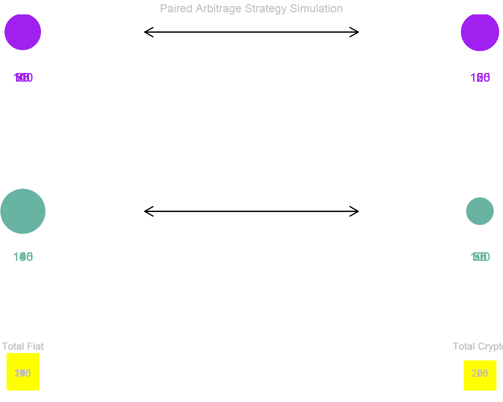

Arbitrage Theory and Implementation
Understanding Market Inefficiencies and Risk-Free Profit Mechanisms
“Arbitrage is the practice of taking advantage of a price difference between two or more markets”
Arbitrage represents one of the fundamental concepts in financial markets, describing the simultaneous purchase and sale of identical or equivalent assets in different markets to profit from price discrepancies. In cryptocurrency markets, this principle applies to the price variations observed across different exchanges for the same digital asset.
As demonstrated in our price analysis, cryptocurrency exchanges do not always maintain identical prices for the same asset. These market inefficiencies create opportunities for risk-free profit through systematic arbitrage strategies.
Classical Arbitrage Example:
Consider the following scenario involving Ethereum trading:
Conceptual Illustration: The following diagram illustrates the arbitrage principle using a simplified commodity example - purchasing tomatoes at €1.00/kg and selling at €1.10/kg. The same fundamental principle applies to cryptocurrency arbitrage, but with instantaneous execution and digital asset transfers.
While the theoretical arbitrage model appears straightforward, real-world implementation encounters several significant constraints that impact profitability and feasibility:
To mitigate the transfer delay problem and reduce volatility exposure, sophisticated arbitrage strategies employ simultaneous paired trading across exchanges without physical asset transfers.
Enhanced Strategy Framework:
library(tidyverse)
library(gganimate)
library(tweenr)
# Initialize portfolio simulation data
initial_state <- data.frame(
x = c(1,4,1,4),
y = c(3,3,1,1),
value = rep(100, 4),
total_fiat = rep(200,4),
total_crypto = rep(200,4),
arrow1 = rep(0,4),
arrow2 = rep(0,4),
arrow3 = rep(0,4),
arrow4 = rep(0,4)
)
# Define trading functions for simulation
execute_trade_1 <- function(portfolio){
trade_amount = 50
profit_margin = 1.8
portfolio$value[1] <- portfolio$value[1] - trade_amount
portfolio$value[2] <- portfolio$value[2] + trade_amount
portfolio$total_fiat <- portfolio$value[1] + portfolio$value[3]
portfolio$total_crypto <- portfolio$value[2] + portfolio$value[4]
portfolio$arrow1 <- 1
portfolio$arrow2 <- 0
portfolio$arrow3 <- 0
portfolio$arrow4 <- 0
return(portfolio)
}
execute_trade_1_complete <- function(portfolio){
trade_amount = 50
profit_margin = 1.8
portfolio$value[3] <- portfolio$value[3] + trade_amount * profit_margin
portfolio$value[4] <- portfolio$value[4] - trade_amount
portfolio$total_fiat <- portfolio$value[1] + portfolio$value[3]
portfolio$total_crypto <- portfolio$value[2] + portfolio$value[4]
portfolio$arrow1 <- 0
portfolio$arrow2 <- 1
portfolio$arrow3 <- 0
portfolio$arrow4 <- 0
return(portfolio)
}
execute_trade_2 <- function(portfolio){
trade_amount = 50
profit_margin = 1.8
portfolio$value[3] <- portfolio$value[3] - trade_amount
portfolio$value[4] <- portfolio$value[4] + trade_amount
portfolio$total_fiat <- portfolio$value[1] + portfolio$value[3]
portfolio$total_crypto <- portfolio$value[2] + portfolio$value[4]
portfolio$arrow1 <- 0
portfolio$arrow2 <- 0
portfolio$arrow3 <- 1
portfolio$arrow4 <- 0
return(portfolio)
}
execute_trade_2_complete <- function(portfolio){
trade_amount = 50
profit_margin = 1.8
portfolio$value[1] <- portfolio$value[1] + trade_amount * profit_margin
portfolio$value[2] <- portfolio$value[2] - trade_amount
portfolio$total_fiat <- portfolio$value[1] + portfolio$value[3]
portfolio$total_crypto <- portfolio$value[2] + portfolio$value[4]
portfolio$arrow1 <- 0
portfolio$arrow2 <- 0
portfolio$arrow3 <- 0
portfolio$arrow4 <- 1
return(portfolio)
}
# Execute trading simulation sequence
trading_sequence <- list(initial_state, initial_state, initial_state)
current_portfolio <- initial_state
sequence_step <- 1
# Simulate one complete arbitrage cycle
for(cycle in 1){
# Execute first trade pair
sequence_step <- sequence_step + 1
current_portfolio <- execute_trade_1(current_portfolio)
trading_sequence[[sequence_step]] <- current_portfolio
# Complete first trade
sequence_step <- sequence_step + 1
current_portfolio <- execute_trade_1_complete(current_portfolio)
trading_sequence[[sequence_step]] <- current_portfolio
# Execute reverse trade pair
sequence_step <- sequence_step + 1
current_portfolio <- execute_trade_2(current_portfolio)
trading_sequence[[sequence_step]] <- current_portfolio
# Complete reverse trade
sequence_step <- sequence_step + 1
current_portfolio <- execute_trade_2_complete(current_portfolio)
trading_sequence[[sequence_step]] <- current_portfolio
}
# Create smooth animation transitions
animated_data <- tween_states(trading_sequence, tweenlength = 0.01, statelength = 0.1,
ease = c('cubic-in-out'), nframes = 100)
# Generate arbitrage visualization
arbitrage_plot <- animated_data %>%
ggplot(aes(x=x, y=y, size=value, frame=.frame)) +
theme_void() +
geom_point(aes(color=paste(x,y))) +
scale_color_manual(values=c("#69b3a2", "purple", "#69b3a2", "purple")) +
scale_size_continuous(range=c(1,30)) +
theme(legend.position="none") +
# Portfolio values display
geom_text(aes(label=round(value,0), x=x, y=y-0.5, color=paste(x,y)), size=6) +
# Exchange labels
geom_label(x=-1, y=3, label="Exchange 1", color="purple", size=5) +
geom_label(x=-1, y=1, label="Exchange 2", color="#69b3a2", size=5) +
# Trading arrows
geom_segment(aes(alpha=arrow1), x=1.8, xend=3.2, y=3, yend=3, size = 1,
arrow = arrow(length = unit(0.5, "cm"))) +
geom_segment(aes(alpha=arrow2), x=3.2, xend=1.8, y=1, yend=1, size = 1,
arrow = arrow(length = unit(0.5, "cm"))) +
geom_segment(aes(alpha=arrow3), x=1.8, xend=3.2, y=1, yend=1, size = 1,
arrow = arrow(length = unit(0.5, "cm"))) +
geom_segment(aes(alpha=arrow4), x=3.2, xend=1.8, y=3, yend=3, size = 1,
arrow = arrow(length = unit(0.5, "cm"))) +
# Alpha control for arrows
scale_alpha_continuous(range=c(0,1)) +
# Portfolio total bars
geom_segment(x=1, xend=1, y=-1, aes(yend=(0-(-0.8)/(500-200))*total_fiat-1.33),
color="yellow", size=22, alpha=0.7) +
geom_segment(x=4, xend=4, y=-1, aes(yend=(0-(-0.8)/(500-200))*total_crypto-1.33),
color="yellow", size=22, alpha=0.7) +
# Portfolio labels
geom_text(x=1, y=-.5, label="Total Fiat", color="grey", size=5) +
geom_text(x=4, y=-.5, label="Total Crypto", color="grey", size=5) +
geom_text(x=1, y=-.8, aes(label=round(total_fiat,0)), color="grey", size=5) +
geom_text(x=4, y=-.8, aes(label=round(total_crypto,0)), color="grey", size=5) +
# Asset type labels
geom_label(x=1, y=4, label="Fiat Currency", color="black", size=5) +
geom_label(x=4, y=4, label="Cryptocurrency", color="black", size=5) +
# Title and subtitle
ggtitle("Paired Arbitrage Strategy Simulation") +
theme(plot.title = element_text(size=16, hjust=0.5, color="grey"))
arbitrage_plot
Strategic Advantages:
Successful arbitrage implementation requires comprehensive risk management addressing both systematic and operational risks:
The theoretical framework established here provides the foundation for practical arbitrage implementation. The next phase involves developing automated trading systems capable of executing these strategies at the speed and scale required for profitability.
Key implementation components include: